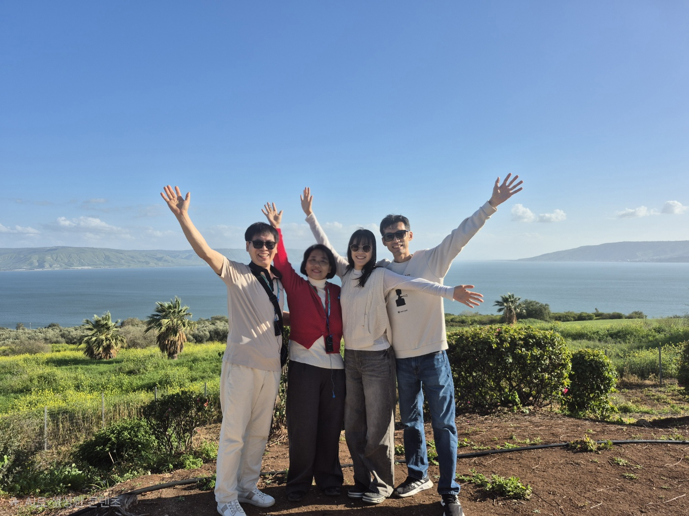
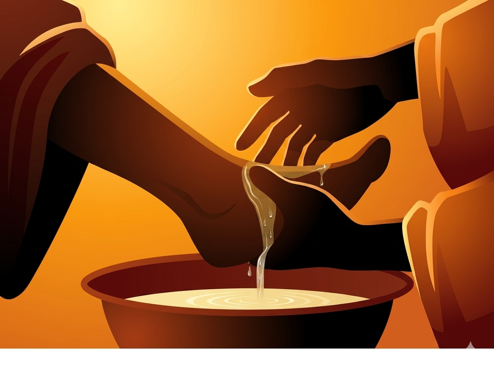

쉼과 회복이 필요한 이들을 향해 우리는 함께 섬깁니다.
주님의 이름으로 문안드립니다.
복음의 현장에는 묵묵히 주님을 섬기다 지쳐 쓰러진 종들이 있습니다. 사도 바울조차 "힘에 겹도록 심한 고난을 당하여 살 소망까지 끊어지고"(고후 1:8)라고 고백했던 것처럼, 사역의 길은 때로 한 사람의 힘으로는 감당할 수 없는 무게를 지웁니다. 그러나 성경은 바로 그 자리에서 하나님을 "모든 위로의 하나님"(고후 1:3)으로 만나게 하시고, 위로받은 자가 다시 다른 이를 위로하는 자로 세워지는 거룩한 순환을 말씀하십니다(고후 1:4).
Ichthys Solace(익투스 솔리스)는 바로 이 말씀 위에 서 있습니다. 상한 갈대를 꺾지 아니하시고 꺼져가는 등불을 끄지 아니하시는 주님의 마음(사 42:3)을 따라, 저희는 지친 이들의 곁에 머물며 하나님이 부어주시는 위로의 통로가 되기를 소망합니다.
이 길에 함께 걸어주시는 모든 분들께 깊이 감사드리며, 여러분의 삶과 사역 위에 주님의 위로가 넘치기를 축복합니다.
대표 양건호 드림

Ichthys Solace(익투스 솔리스)는 '물고기(ΙΧΘΥΣ)'와 '위로(Solace)'를 뜻하는 이름처럼, 주님의 부르심을 따라 사역의 현장에서 지친 이들을 싸매고 회복시켜 다시 세우는 선교 공동체입니다.
저희는 세 가지 방향으로 섬김의 자리를 지키고 있습니다. 첫째, 오랜 사역의 무게로 몸과 마음이 지친 사역자들에게 회복 프로그램과 쉼의 자리를 제공하여, 그들이 다시 본래의 사역지로 돌아갈 수 있도록 돕습니다. 둘째, 낯선 환경과 제한된 여건 속에서도 복음을 붙들고 헌신하는 현지인 목회자들의 사역을 기도와 실제적인 지원으로 뒷받침합니다. 셋째, 일과 유학, 이주를 통해 우리 가운데 들어온 국내 외국인들이 이 땅에서 하나님의 환대와 사랑을 경험하도록 섬깁니다.
상한 갈대를 꺾지 아니하시고 꺼져가는 등불을 끄지 아니하시는 주님의 마음(사 42:3)을 따라, 저희는 회복의 통로이자 다시 파송하는 손이 되기를 소망합니다.
이 거룩한 여정에 여러분을 초대합니다.

Healing Today, Sending Tomorrow
오늘, 우리는 치유합니다 (Healing Today). 복음의 현장에서 지치고 상한 종들이, 사랑받는 자로서 다시 숨을 고르고 하나님의 위로 안에서 온전히 회복되기를 소망합니다. 낯선 땅에서 외롭게 서 있는 현지인 목회자들과, 이 땅에 들어와 머무는 외국인 형제자매들도 이 회복의 자리에 함께 초대받습니다.
내일, 우리는 다시 보냅니다 (Sending Tomorrow). 회복은 그 자체로 끝이 아니라 새로운 출발의 문입니다. 치유받은 자가 다시 복음의 현장으로 담대히 나아가고, 위로받은 자가 또 다른 지친 영혼을 위로하는 자로 세워지는 것(고후 1:4). 이것이 저희가 꿈꾸는 거룩한 순환입니다.
우리는 믿습니다. 상한 갈대를 꺾지 아니하시는 주님께서(사 42:3) 오늘도 그분의 일꾼들을 친히 회복시키시고, 다시 열방으로 파송하고 계심을.